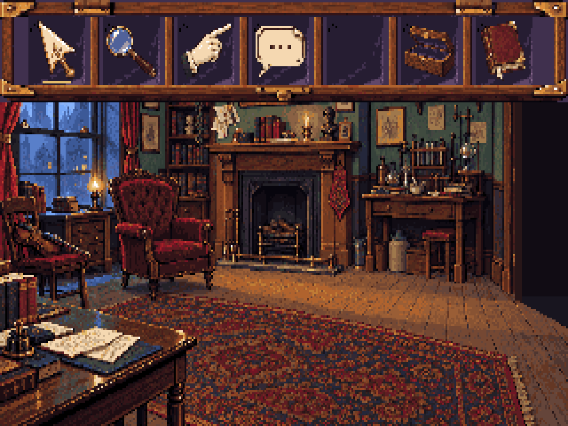
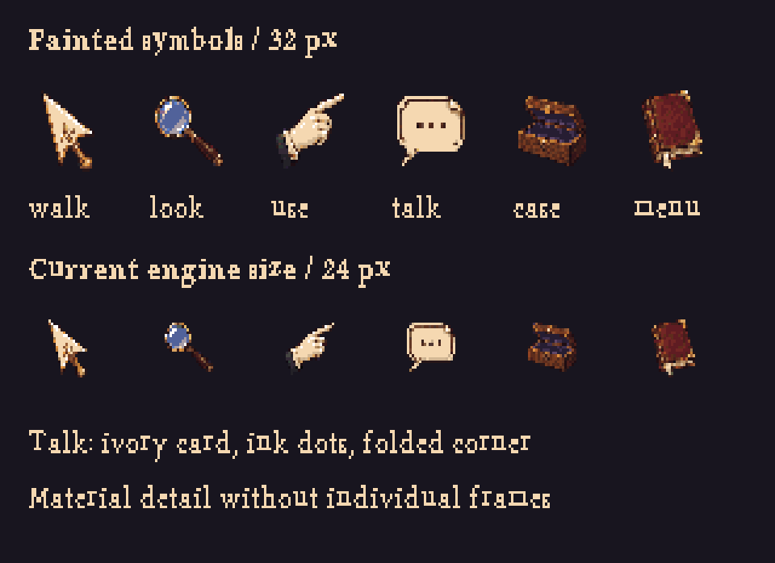
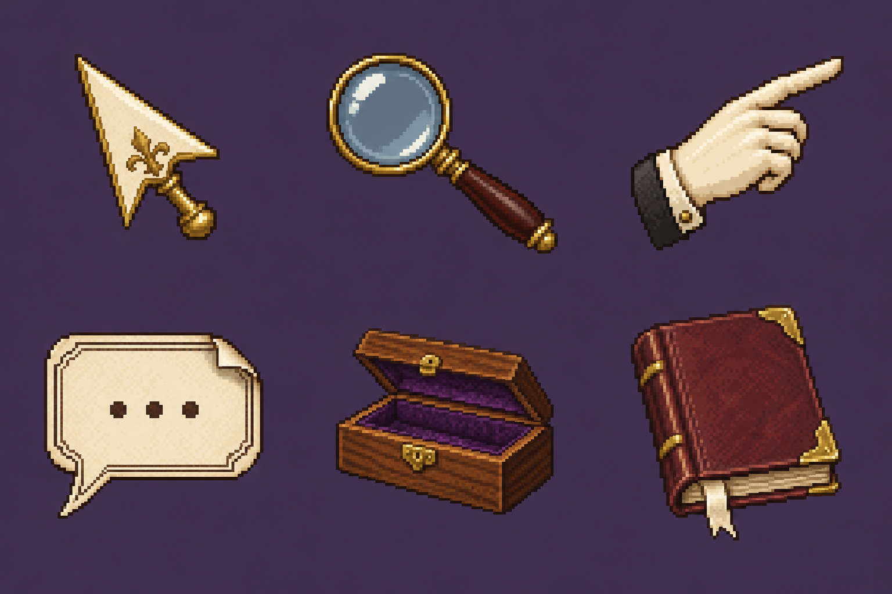
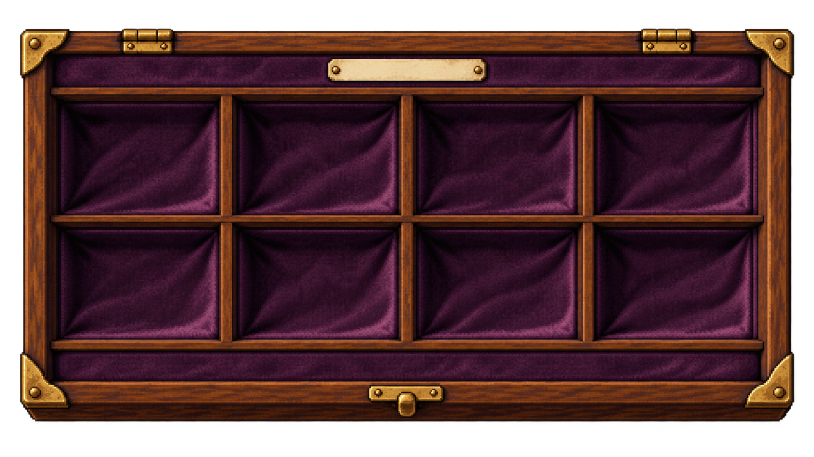
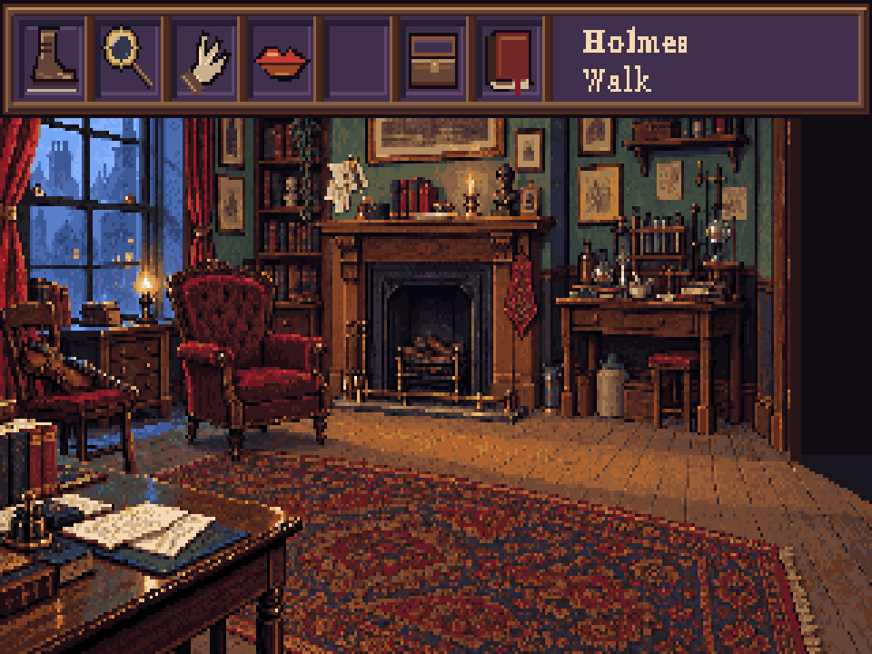

More material detail in the case; clearer, less literal symbols. Talk is an ivory calling-card speech bubble with ink dots, a folded corner and a pointed tail.

Preferred 32-pixel icons. The empty compartment is reserved for the active item.
Art review. The engine currently uses 24-pixel icons; adopting 32 pixels needs coordinated layout and hitbox changes. Both native sizes are supplied below.



Workflow and handoff · Editable objects · Editable case · Layout measurements